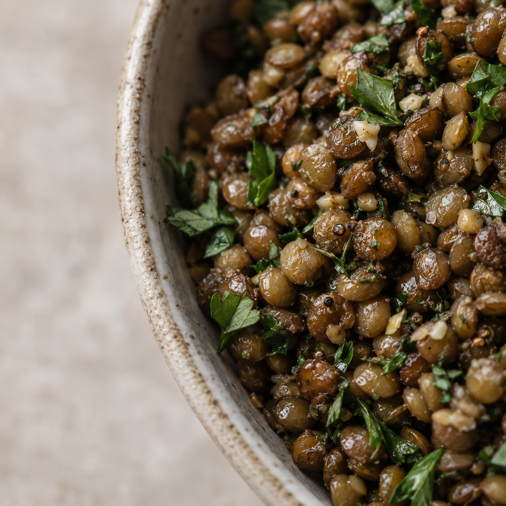

Calorie & Nutrition App Final visual direction
Light, open, built around one number.
512
kcal · per 340 g portion

Calorie & Nutrition App Final visual direction
01 Colour
Bramble marks four things: the primary action, an active state, a selected value, and the occasional hero emphasis. Everywhere else the interface stays neutral so photography can carry the colour.
Macro markers — 7 px dots, never fills or bars


02 Typography
Nothing in the interface falls below 14 px except the uppercase caption, which is used sparingly. Hierarchy comes from scale and space, not from shrinking text.
03 Grid, spacing, radius
Spacing scale
24–40 px between major sections. 8 and 16 inside a group.
Radius
Large radii on large surfaces only. Small elements stay squarer.
Margins
04 Food & crop direction
Crops enter the layout from an edge rather than sitting inside a rectangle. Type and data hold the open side.
4:5 — recipe & product hero

1:1 — compact cards

Circle — the bleed crop

Ingredient & detail crops
Asymmetric crop entering from one side, balanced by type in open space
05 Nutrition data
Per portion
Three columns on one grid, equal weight. Amounts and calories hold fixed right-hand columns.
06 Action
Primary · 56 px · radius 28
Secondary · 1 px hairline
Quiet · berry on tint
07 Mobile fragments
Slices of real surfaces, not finished screens — each one cut off where the scroll continues.
Roast squash
& couscous
Nutrition result — topThe signature: crop entering from the right, type and number holding the open left.
Nutrition
Portion100 gIngredients
Nutrition detail — mid scrollMacros on one grid with equal weight; amounts and calories hold fixed columns.
Roast squash & red lentils
Recipe — headerLarge 4:5 crop, meta on one line, one berry action.
08 Type at mobile size
Rendered at true 390 px values — nothing in this section is scaled up for the page.
Roast squash & red lentils
Roasted until the edges catch, then folded through lentils with lemon and tahini. Best warm, and it keeps for two days.
Verified source
Tabular figures throughout. The annotation column is stylescape chrome, not interface type.